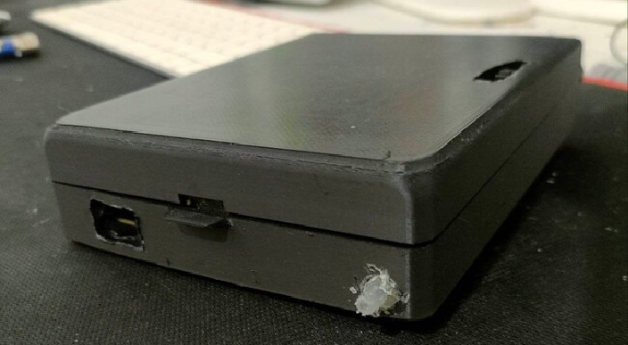
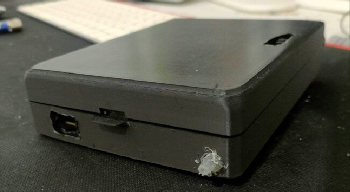

I'm Oumaima YOUNSI
Building Tomorrow's Connected Reality: Unleashing IoT's Infinite Possibilities!
I'm an IoT engineering student
- Name: Oumaima YOUNSI
- Job: IoT engineer
- Residence: Tunisia
- Languages: Arabic, English, French, Chinese
I am Oumaima, and I find myself deeply drawn to technology and innovation since I was in high school. As I pursue my dreams of becoming a telecommunications engineer with a focus on Internet of Things Systems & Services, I am grateful for the opportunities that have come my way. My academic journey has been supported by some achievements that I am proud of (More details in the portfolio section). As Austin Kleon says in "Show Your Work" "You're only as good as your record collection." However, I recognize that there is always room for growth and improvement.
With a modest skillset in programming languages, web development, and design tools, I try my best to explore and learn from each experience. Creating meaningful projects that can make a positive impact is a driving force for me. In fact, I believe that IoT is the IT specialization that can change and impact people's lives, even though I know there is much more to discover and understand in the world of IT. However, I strongly believe that I need to share my experiences and knowledge about things that made me curious and amateur. That's why I started writing blogs on Medium .
Outside my studies, I enjoy engaging in extracurricular activities where I can contribute and learn from others. Across various projects, I have had the privilege of honing my leadership abilities during my involvement with AIESEC, which has provided me with a broader perspective on the world and made me aware of the world's needs. Another avenue of personal development I find gratifying is engaging in listening to podcasts and audiobooks, as it allows me to gain knowledge through others' experiences.
With a sincere enthusiasm for contributing and advancing, I aspire to play a modest role in the ever-evolving realm of technology and to effect positive change along the way.
My capabilities
Programming
Thanks to a diverse array of experiences, including internships, projects, and jobs, alongside my unwavering passion for coding and solving problems on platforms like LeetCode, I am constantly driven to enhance my technical prowess.
Edge
Drawing from academic courses and hands-on experiences like the Caladrius project, I expertly conceptualize IoT hardware architecture, empowering transformative projects through innovative component selection.
Network
With extensive academic knowledge and hands-on experience in network technologies like Bluetooth, Wi-Fi, and 4G, I design seamless and reliable connectivity solutions, empowering successful IoT projects.
My Skills
Python
Java
Sql
Spring Boot
Angular
Node Js
Docker
Matlab
c
JavaScript
Arduino
Photoshop
Illustrator
Indesign
My Education
-
Telecommunications Engineer
2021-2024Specialization: Internet of Things Systems & Services at ESPRIT Private Higher School of Engineering and Technologies, Tunis
-
Bachelor's Degree in Computer Science and Multimedia
2017-2020at ISAMM Higher Institute of Multimedia Arts in Manouba, Tunis
My Experience
-
Web manager at NET-INFO and DALL
April 2021 - October 2022Beginning as a full-time Web Manager at NET-INFO and DALL, I dedicated myself to the creation, maintenance, design, and planning of websites and web applications using technologies like ReactJs, NodeJs, MongoDB, Firebase, Three.Js, WordPress, and Moodle from April 2021 to October 2022. During this period, I delivered digital solutions and facilitated project follow-up and validation meetings with both local and international partners. Later, driven by a commitment to further enhance my knowledge and skills, I transitioned into a part-time role to pursue my studies at ESPRIT, solidifying my expertise and staying at the forefront of cutting-edge web development practices. This journey of balancing professional growth and academic pursuit has enriched my capabilities and made me a versatile asset in the digital landscape.
-
Web Developer at Élan by CONECT
February 2021- April 2021During my tenure at a training company, I played a pivotal role in web development and training initiatives. My responsibilities encompassed writing detailed specifications for the website, ensuring clear guidelines for the project's execution. I collaborated closely with designers, facilitating the seamless integration of models into the web applications. As a trainer, I conducted comprehensive user training sessions, empowering individuals to efficiently utilize the web applications with confidence. Additionally, I took charge of quality assurance, conducting rigorous tests before deliveries to ensure optimal performance and bug-free functionality. Leveraging my expertise in WordPress, I executed these tasks with finesse, resulting in a user-friendly and visually appealing web applications that catered to the training company's needs. Through this experience, I honed my project coordination, communication, and problem-solving skills, solidifying my proficiency in delivering high-quality web solutions that meet clients' expectations.
My COMMUNITY LIFE
-
AIESEC
2019-2021As a Team Leader in AIESEC, an international organization focused on fostering youth leadership and cultural exchange, I had the privilege of spearheading various community initiatives. Notably, I took on the role of Organizer for the prestigious international conference MEAXLDS2020, where I served as a valuable member of the marketing team. Through these experiences, I cultivated strong leadership skills, collaborated with diverse teams, and contributed to creating a vibrant community of like-minded individuals passionate about making a positive impact on a global scale.
-
Aero ESPRIT Club
2022-2023As a dedicated member of my university community, I took the initiative to create the AERO ESPRIT Club , a platform that united aviation enthusiasts and aspiring aerospace amateurs. Serving as a vital member of the executive board and holding the role of VP Marketing, I strategized and executed successful promotional campaigns, fostering a vibrant and inclusive community. Additionally, I had the privilege of representing the club in a national aerospace competition held in Sfax, showcasing our passion for aviation and collaboration with like-minded peers from across the country. Through these experiences, I thrived in a dynamic community, honing my leadership, marketing, and teamwork skills while fueling my passion for aerospace innovation.
My recomandations
My Works
-
View CALADRIUS Project


 


IOT Project CALADRIUS
Janary 2023- March 2023The Caladrius project is a visionary endeavor, uniting advanced drone technology and intelligent glucose monitoring to transform healthcare.
Through innovative drone missions, it delivers crucial supplies and aids rescue efforts during crises.
The drone system autonomously navigates, relaying real-time data via GPS, and overcoming obstacles for secure operations. Simultaneously, the needle-free Glucose pack system employs machine learning to predict glucose levels and administers precise insulin doses. Patient progress is beautifully depicted through graphical representations on a mobile app.
Designed for scalability, the project harnesses fog and edge computing, ensuring optimal performance. The Caladrius project stands as a beacon of innovation, enhancing healthcare access, emergency response, and the well-being of countless individuals.
Technologies: Angular, Node JS, Ionic, MongoDB, Postman, Python, Arduino, ESP32, Tenserflow, Keras -
View (Smart home) RFID Project


IOT Project Acces and contole with RFID
September 2022 - December 2022With an RFID card grants access to sanctuary, doors sense user presence and effortlessly communicate their state.
This project goes beyond mere automation; it's about giving users the power to control their space intuitively. Through a sleek web application, users can gracefully open and close doors remotely, ensuring security and peace of mind at the touch of a button. But our ambitions don't end there. We understand that lighting sets the mood and tone of your abode.
With our system, users can orchestrate the perfect lighting ambiance, from warm and inviting to vibrant and energetic, all with a few taps on the same web application. And to keep users seamlessly connected with their homes, we've integrated a visual display that showcases the current status of lights and doors, putting information at users fingertips.
This project is more than just technology; it's a testament to our passion for redefining everyday living.
Technologies: RFID, ESP32, ReactJS, Nodejs, WebSocket -
View Voting system microservice


Voting system microservice
November 2022- December 2022The Caladrius project is a visionary endeavor, uniting advanced drone technology and intelligent glucose monitoring to transform healthcare.
Through innovative drone missions, it delivers crucial supplies and aids rescue efforts during crises.
The drone system autonomously navigates, relaying real-time data via GPS, and overcoming obstacles for secure operations. Simultaneously, the needle-free Glucose pack system employs machine learning to predict glucose levels and administers precise insulin doses. Patient progress is beautifully depicted through graphical representations on a mobile app.
Designed for scalability, the project harnesses fog and edge computing, ensuring optimal performance. The Caladrius project stands as a beacon of innovation, enhancing healthcare access, emergency response, and the well-being of countless individuals.
Technologies: Angular, Node JS, Ionic, MongoDB, Postman, Python, Arduino, ESP32, Tenserflow, Keras -
-
View StartUpX App project


StartUpX App project
June 2022 - August 2022Introducing StartUpX: where entrepreneurship meets innovation.
Our web app, intricately connected to a game, visualizes the evolution of players as they navigate the startup journey.
From idea inception to startup establishment, every step is celebrated and showcased.
StartUpX empowers aspiring entrepreneurs, offering a structured path to success and a tangible sense of achievement.
Technologies:ReactJs, Firebase -